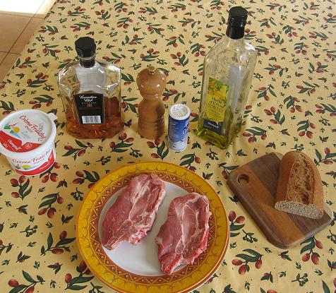
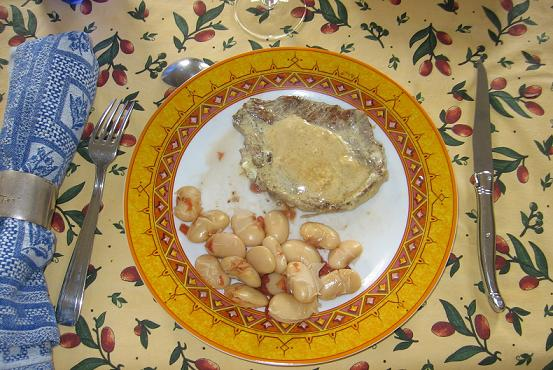

Recette n°113:
Echine de porc fambée au whisky et ses soissons à la
tomate

Les quantités sont pour 6 personnes

Ingrédients
1 - pour les Soissons :
500g de haricots de Soissons (ils sont blancs et très
gros)
une petite boîte de concassé de tomates (400g environ)
un gros oignon
75g de bacon
4 clous de girofle
bouquet garni
sel et poivre
2 - pour l'échine de
porc :
6 côtes de porc dans l'échine (c'est moins gras)
20cl de crème fraîche
5cl de whisky
une cuiller à soupe d'huile d'olive
poivre du moulin
sel
Préparation :
1 - pour les Soissons :
- la veille mettre les Soissons à tremper la nuit
entière, le matin les rincer et les égoutter
- éplucher l'oignon et le piquer des clous de girofle
- dans deux litres d'eau froide mettre tomates, oignon piqué,
bouquet garni, sel et poivre
- y faire cuire les Soissons soit à la cocotte-minute (45mn),
soit à la casserole (1h30mn à 2h)
- on peut ensuite laisser mijoter à feu très doux ou
réchauffer le moment de servir venu
2 - pour l'échine de
porc :
Enduire les échines de porc dans le poivre de manière
à bien en recouvrir les deux faces.
Chauffer l’huile d’olive dans une poêle puis y déposer la
viande et bien la cuire en la retournant plusieurs fois
Salez la viande puis la flamber avec la moitié du whisky.
Réserver la viande au chaud.
Déglacer la poêle avec le reste du whisky puis ajouter la
crème ; laisser épaissir quelques instants cette sauce
puis en napper la viande
Serrvir aussitôt avec les Soissons
Observations :
Recette inspirée de deux recettes, l'une est de Picardie (les
haricots de Soissons en purée avec des côtes de porc),
l'autre américaine (steaks flambés au whisky) ; ici, le
steak est devenu échine de porc et les Soissons ont
été conservés entiers (ils sont tellement beaux
ainsi !).
Recette exécutée le 14 décembre 2006 pour nous
deux à Rennes.
C'est très bon et excellent comme plat d'hiver.